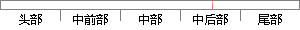

，理想的 评价 函数 应 具备单峰性、 精确性、尖锐 性和
片段位置图

相似结果
相似片段：
标位置，若已投射到，结束平面定位操作；否则，需要循环上述操作，直至光带投射到到达目标位置为止。 4易开盖刻痕机器视觉系统中自动调焦算法 理想的调焦函数应该具备单峰性、无偏性、灵敏度高和计算量少等特点[11-12] 。为了研究适合于刻痕光带 图像的调焦函数，对目前常见的6种基于灰度梯度的调焦函数：4邻域灰度差绝对值之和函数、Roberts
| 对比库： | 已发表资源库 |
| 来源： | "Research on Three Dimensional Positioning Algorithm on Machine Vision Inspection System of the Nick Depth of Easy Open End", Laser & Optoelectronics Progress, 2015. 查看来源 |
| 相似率 | 53.33% （轻度抄袭） |